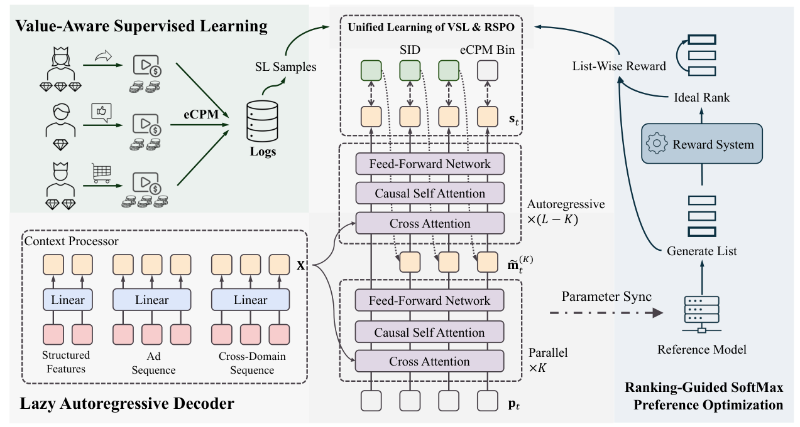

Generative Recommendation for Large-Scale Advertising (面向大规模广告的生成式推荐)
- 会议/期刊: KDD 2026 (under review, arXiv v3)
- 作者与机构: Ben Xue, Dan Liu, Lixiang Wang 等（快手科技，通讯作者 Peng Jiang）
- 推荐链路定位: 端到端生成式（替代 DLRM 召回/排序栈，实时在线学习）
- 研究方向: 生成式推荐与离散语义 ID / 强化学习与动态探索推荐
- 论文原文: https://arxiv.org/abs/2602.22732v3
- 开源代码: 暂未开源
TL;DR (1分钟核心速览)
本文针对“LLM 式生成式推荐配方无法直接用于大规模实时广告”的三处断层（广告多模态+商业信号无法统一 token 化、逐点监督与列表级 eCPM/NDCG 目标错位、多候选生成在严格延迟预算下不可用），提出工业级系统 GR4AD：UA-SID 语义 ID（MLLM 指令微调+共现对比学习+MGMR RQ-Kmeans）、LazyAR 惰性自回归解码、VSL/RSPO 统一在线价值对齐，以及动态 Beam 服务。快手全量线上 A/B（4 亿用户）广告收入最高 +4.28%、单卡吞吐 +117%，延迟 <100ms。
Background & Motivation (背景与核心矛盾)
- 主流范式: 以 TIGER/OneRec 为代表的生成式推荐把物品编码为分层 Semantic ID，用自回归 Transformer 做 next-token 生成式检索，工业界已开始替换 DLRM 双塔。
- 前人局限 1（Tokenization）: 广告创意融合视频、商品、广告主 B2B 元数据，且转化类型、账户 ID 等强商业信号无“语义”，纯内容量化会产生大量 SID 碰撞，同一创意在不同转化目标下投放轨迹完全不同。
- 前人局限 2（Learning）: 广告优化的是排序列表上的 eCPM 与 NDCG，逐 token 交叉熵只在拟合日志分布；DPO/GRPO 等偏好优化是离线、pair-wise 的，缺乏列表级、可流式更新的价值对齐。
- 核心洞察 (Key Insight): 作者发现第一级 SID（\(s_1\)）损失最大、最难学，但在 Beam Search 中因从 BOS 出发其有效 beam 恒为 1，几乎不占解码开销；绝大部分算力反而花在“更容易”的高层 SID 上——学习难度与推理成本严重错配。
- 本文切入点: 按“表征—学习—服务”三位一体重设计：让难学的层全层计算、易学的层延迟注入条件依赖，并把监督信号直接对齐到列表级商业价值。
Method (核心方法设计)
1. 整体框架 (Overall Architecture)
输入侧将结构化特征、跨域行为序列、广告行为序列经轻量线性 Context Processor 编码为上下文 \(\mathbf{X}\)；目标侧把广告映射为 UA-SID 序列\(y=(s_1,\dots,s_T)\)并附加一个 eCPM 离散桶 token。解码器由\(L=9\)层“cross-attn + causal self-attn + FFN”构成，前\(K=6\)层对所有 SID 层与所有 beam 并行计算，第\(K\)层才注入上一级 SID 嵌入，后\(L-K\) 层自回归生成。训练采用 VSL（SID 交叉熵 + eCPM token + MTP 辅助）与 RSPO（列表级 RL）在单流中按样本级对齐分数动态加权；线上由 Reward System 打分回灌、Realtime Index 秒级更新 SID↔Item 双向索引，并以动态 Beam 服务在峰谷流量间调度算力。
flowchart TD
A["结构化特征 + 跨域/广告行为序列"] --> B["Context Processor → X"]
B --> C["UA-SID: MLLM 指令微调 + 共现对比 → MGMR RQ-Kmeans"]
C --> D["LazyAR: 前 K 层并行共享 + 第 K 层 Fuse 注入 s_(t-1)"]
D --> E["SID token + eCPM token 输出"]
E --> F["VSL / RSPO 统一在线学习 + 动态 Beam 服务"]

图 1：我们提出的 GR4AD 概述：模型架构与学习算法。
2. 关键设计拆解 (Key Designs)
- UA-SID：让语义 ID 同时装下内容与商业信号：痛点是无端到端广告 embedding，且内容量化对“同素材不同转化目标”无区分力。UAE 用 MLLM（Qwen3-VL-7B）对 6 类广告指令微调，再以 Swing 共现强度构造正样本做 InfoNCE：\(\mathcal{L}_{\text{NCE}}(i)=-\log\frac{\sum_{j\in P_i}\exp(\mathbf{z}_i^\top\mathbf{z}_j/\tau)}{\sum_{k\neq i}\exp(\mathbf{z}_i^\top\mathbf{z}_k/\tau)}\)；量化端用多分辨率 RQ-Kmeans（低层大码本 16384 抓主因子、高层小码本 4096/1024 建模低熵残差 + 平衡聚类），最后一层改为非语义特征（账户 ID、转化类型）的哈希映射。直觉：把“商业 ID”从连续残差中剥离，碰撞率骤降且几乎不增量化误差。
- LazyAR：把自回归依赖推迟到中间层：针对上述“难度—成本错配”，前 \(K\)层不条件于\(s_{t-1}\)：\(\{\mathbf{m}_t^{(K)}\}_{t=1}^{T}=\mathrm{Dec}^{(1:K)}(\{\mathbf{p}_t\},X)\)，在第\(K\)层做门控融合\(\tilde{\mathbf{m}}_t^{(K)}=\mathbf{W}_f[\mathbf{m}_t^{(K)}\odot(\mathbf{W}_g\mathbf{s}_{t-1});\mathbf{s}_{t-1}]\)，再走\(L-K\)层自回归。因前\(K\)层与\(s_{t-1}\)无关，可跨层、跨 beam 一次性算完，Beam Search 的串行深度从\(L\)降到\(L-K\)；同时加 MTP 辅助损失（令\(\mathbf{h}_t^{(K)}\triangleq\mathbf{m}_t^{(K)}\) 直接预测）迫使 trunk 在潜空间完成推理，避免 DeepSeek-MTP 式“另加浅层解码器”带来的参数膨胀与性能回退。
- VSL + RSPO：与列表级商业价值对齐的统一在线学习：VSL 在 \(\mathcal{L}_{\text{SID}}\)外追加 eCPM 桶预测\(\mathcal{L}_{\text{eCPM}}\)，并按\(w=w_{\text{user}}\cdot w_{\text{behavior}}\)加权样本（购买 > 点击）。RSPO 把 RL 目标写成 NDCG-cost 的上界：\(\mathcal{L}_{\text{RSPO}}=-\mathbb{E}\big[\log 2\sigma\big(-\log\sum_{y_j\in E_i}M_{ij}\exp(\beta\Delta_{ij})\big)\big]\)，其中\(\Delta_{ij}=\log\frac{p_\theta(y_j|X)}{p_{\text{ref}}(y_j|X)}C_{ij}-\log\frac{p_\theta(y_i|X)}{p_{\text{ref}}(y_i|X)}C_{ij}\)，Lambda 权重\(M_{ij}=|\frac{1}{D_{|i-j|}}-\frac{1}{D_{|i-j|+1}}|\,|G_i-G_j|\)；\(C_{ij}\)是参考分布可用性门控，当模型与\(p_{\text{ref}}\)偏离超阈值\(\delta\)时直接丢弃参考项，避免脏正则。二者不再分阶段串联，而以排名错位度\(A^{(i)}=|r_p^{(i)}-r_v^{(i)}|/(n-1)\)动态加权：\(w_{\text{VSL}}^{(i)}=w_0\exp(A^{(i)}\log(1+v_i))\)，\(w_{\text{RL}}^{(i)}=w_0Z_{\max}(1-A^{(i)})\)。
- 训练目标与推理效率：总体 \(\mathcal{L}=\mathbb{E}_i[w_{\text{VSL}}^{(i)}\mathcal{L}_{\text{VSL}}^{(i)}+w_{\text{RL}}^{(i)}\mathcal{L}_{\text{RSPO}}^{(i)}]\)，\(\mathcal{L}_{\text{VSL}}=\mathbb{E}[w(\mathcal{L}_{\text{SID}}+\lambda_e\mathcal{L}_{\text{eCPM}}+\lambda_{\text{mtp}}\mathcal{L}_{\text{MTP}})]\)；无人工负采样，全依赖 softmax 全库 SID 生成。推理侧：动态 Beam 宽度（如 512-512-512 → 128-256-512 的渐进放大）+ 流量自适应 TABS（低谷 beam +60%）、推荐结果短 TTL 缓存、Beam-Shared KV Cache（KV 读取\(O(B\cdot L)\to O(L)\)）、TopK 预裁剪与 FP8。
Experimental Setup & Evaluation Protocol (实验设置与评估协议)
- 评估规模与部署: 快手广告系统全量，4 亿+ 用户；线上模型 0.16B，单 L20 上 <100ms 延迟、500+ QPS。
- 数据划分与防穿越: 无经典离线划分，采用在线流式学习：实请求/交互流实时构造 VSL 正样本日志与 RL 样本，参数实时同步至推理服务器；SID 质量另建离线 photo-to-photo 召回测试集（两图属同一广告商品即命中）。
- 排名评测协议: 生产流量 A/B 实验（非离线 Full-Ranking / Sampled Ranking）。因生成式模型与 DLRM 多模型共服 GPU 配置不同，单模型 QPS 不可直接比，故一律报相对 GR-Base 的 QPS 变化与相对 DLRM 的收入提升。
- 对比基线与超参: 基线为 DLRM 生产栈与 OneRec-V2；RL 对照 DPO、GRPO；效率对照 DeepSeek-MTP。LazyAR 取 \(L=9\)、\(K=6\)；Beam 默认 512，扩展实验至 1024。
| 部署/评估项 |
规模或数值 |
| 服务用户量 |
400M+ |
| 线上模型参数 |
0.16B |
| 单卡吞吐/延迟 |
500+ QPS / <100ms (L20) |
| SID 层级/码本 |
3 层 (16384, 4096, 1024*，末层哈希) |
| 解码层数 |
\(L=9\), 共享\(K=6\) |
Key Experimental Results (实验关键数据)
1. 主实验对比 (Main Results)
| 模型设置 |
ΔRevenue (vs. DLRM) |
ΔQPS (vs. GR-Base) |
| DLRM (Base) |
– |
– |
| OneRec-V2 (GR-Base) |
+1.68% |
– |
| + UA-SID |
+1.92% |
0% |
| + VSL |
+2.80% |
−25% |
| + VSL + DPO |
+3.16% |
−25% |
| + VSL + GRPO |
+3.21% |
−25% |
| + VSL + RSPO |
+3.86% |
−25% |
| + Unified VSL & RSPO (UVR) |
+4.01% |
−25% |
| + UVR + DBS |
+4.32% |
+20% |
| + UVR + DBS + DeepSeek-MTP |
+3.98% |
+117% |
| GR4AD (+UVR+DBS+LazyAR) |
+4.28% |
+117% |
2. 消融实验 (Ablation Study)
| 组件消融 |
R@1 |
R@5 |
R@10 |
Cpr↓ |
Col↓ |
Util↑ |
| QARM (仅视频内容) |
0.541 |
0.812 |
0.893 |
– |
– |
– |
| Qwen3-VL-7B |
0.769 |
0.948 |
0.977 |
– |
– |
– |
| + IT + CL (UAE) |
0.896 |
0.985 |
0.994 |
– |
– |
– |
| RQ-Kmeans |
– |
– |
– |
3.54 |
85.44% |
0.10‰ |
| + MR |
– |
– |
– |
1.78 |
59.72% |
0.20‰ |
| + MG + MR (UA-SID) |
– |
– |
– |
1.07 |
18.26% |
0.34‰ |
| 规模缩放 |
0.03B |
0.08B |
0.16B |
0.32B |
Beam 128 → 1024 |
| ΔRevenue |
+2.13% |
+2.68% |
+4.01% |
+4.43% |
+2.33% → +4.21% |
| QPS |
– |
– |
– |
– |
200% → 30% |
3. 关键实验发现 (Key Findings)
- 列表级 RL 是最大单项增益，且必须与 VSL 统一：VSL 单独带来 +0.88pt（1.92→2.80），而 RSPO 再加 +1.06pt，显著超过同位置的 DPO（+0.36pt）与 GRPO（+0.41pt）；UVR 动态加权再补 +0.15pt，说明“逐点拟合 + 列表级价值偏置”互补而非替代。
- LazyAR 用 0.04pt 收入换取 117% 吞吐，远优于“另加浅层解码器”：DeepSeek-MTP 同样达 +117% QPS，但收入从 +4.32% 跌至 +3.98%（−0.34pt）；LazyAR 以共享前 \(K=6\) 层的潜空间推理几乎无损，验证“延迟注入 + MTP 辅助”优于“新增参数”的路线。
- 语义 ID 的收益主要来自碰撞率而非纯语义：MGMR 把碰撞率从 85.44% 降至 18.26%、压缩比 3.54→1.07，其中末层哈希专治“同素材不同转化目标”；但整条 tokenization 链路只贡献 +0.24pt 收入，说明生成式推荐的天花板在优化目标对齐（+2.09pt）而非表征本身。
- 双侧缩放律成立：模型 0.03B→0.32B 收入单调 +2.13%→+4.43%；Beam 128→1024 收入 +2.33%→+4.21% 但 QPS 从 200% 降至 30%，构成显式的“效果—算力”可调曲线，为固定预算下的服务调度提供依据。业务侧还带来中小广告主投放量 +17.5%、转化率 +10.17%（低活跃用户 +7.28%）。
Highlights & Limitations (亮点、对比与审稿批判)
- 与代表作对比: 相较 TIGER/QARM 只用内容量化 SID，本文把广告商业 ID 显式注入末层哈希，直接压低碰撞率；相较 OneRec-V2 的 LazyDecoder 与分阶段 SFT+RL，LazyAR 进一步放松层间依赖并把 VSL/RSPO 融合为单流在线学习；相较 DPO/GRPO 的 pair-wise 离线偏好，RSPO 给出 NDCG-cost 上界并带参考分布可靠性门控。
- 可迁移亮点: (1) “难层全算、易层延迟注入 + 跨 beam 共享前 \(K\)层”的解码器改造可平移至任何短多候选生成式召回；(2) 末层哈希承接非语义 ID 的反碰撞技巧，适用于电商/本地生活等强业务属性场景；(3) 用排名错位度\(A^{(i)}\) 自适应调和模仿与探索，可复用到其他在线学习系统。
- 审稿级局限批判: 全部结论建立在单一平台线上 A/B 上，无公开离线基准、无重复实验与显著性检验（缺 \(p\)值/置信区间），外部无法复现，且“收入提升”强依赖 Reward Model 的估计偏差；LazyAR 仍有 −0.04pt 的效果损失且\(K\)为手工设定（\(K=6/L=9\)），对层级深度与码本配置的敏感性未给出分析；此外 Beam 1024 时 QPS 仅剩 30%，DBS 依赖峰谷流量假设，在平稳高负载下收益会收窄。
Rating (四维评分)
- 方法创新性 (Novelty): ⭐⭐⭐⭐ （LazyAR 的“难度—成本错配”观察与延迟注入算子颇具巧思，RSPO 给出 NDCG-cost 上界并处理参考分布失效，属工程与理论兼具的增量创新）
- 评估协议与实验扎实度 (Protocol & Experiments): ⭐⭐⭐ （4 亿用户全量 A/B 与双侧缩放律很有说服力，但缺公开离线基准、缺显著性检验、SID 消融仅单次离线指标）
- 写作与数学规范度 (Clarity & Rigor): ⭐⭐⭐⭐ （三处痛点与三块设计一一对应，RSPO 与权重公式完整；部分符号如 \(C_{ij}\)阈值\(\delta\)、\(Z_{\max}\) 取值未给具体数值）
- 工业落地与复现价值 (Industrial & Practical Value): ⭐⭐⭐⭐⭐ （完整闭环系统：实时索引、在线学习、动态 Beam、KV 共享与 FP8，给出 <100ms/500+ QPS 的可迁移工程基线，唯代码未开源）